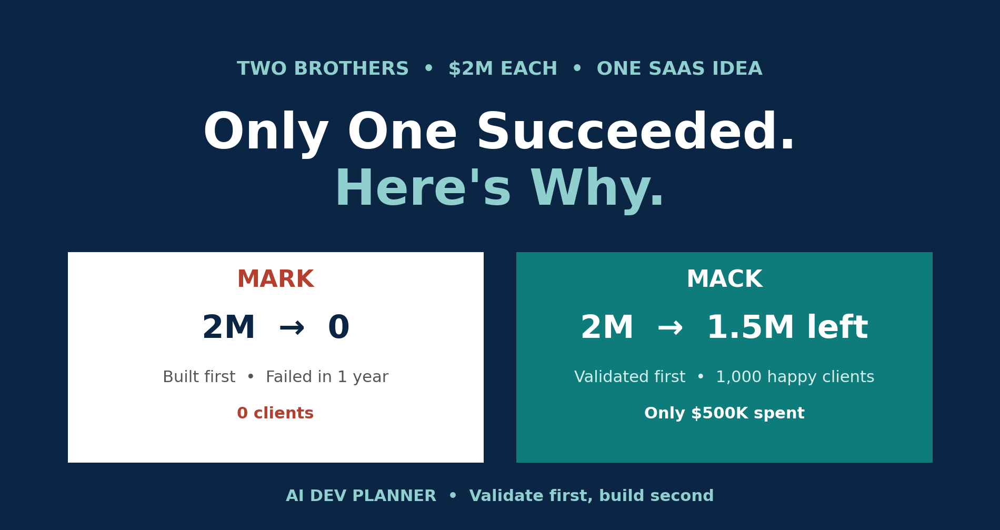
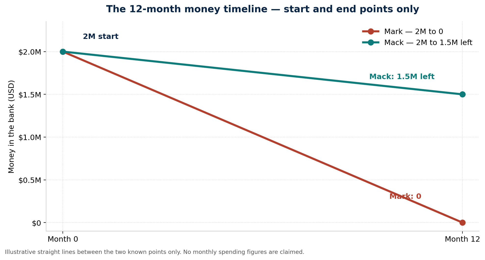
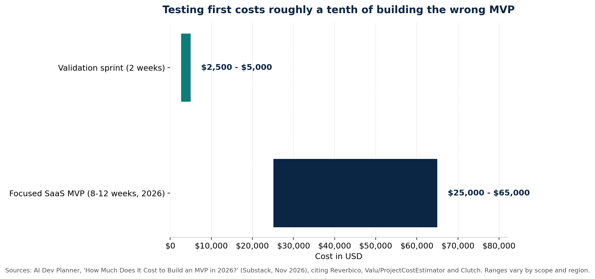
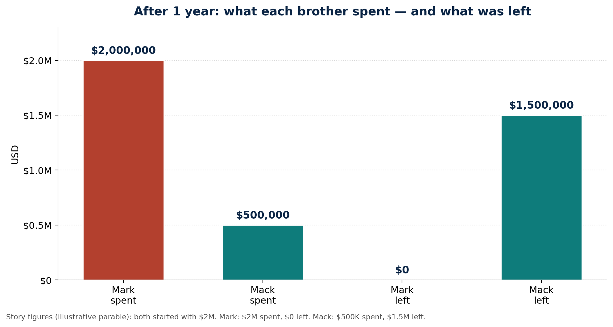

Mark trusted an agency that started coding on Day 1. Mack chose a validate-first partner. One year later, the difference is $1.5M — and 1,000 happy clients.
By Obaid Tariq, Founder & Lead Engineer, AI Dev Planner · 27 November 2026 · Also on LinkedIn
One year ago, two brothers each had $2M and one SaaS idea.
Today, one has $0 and a dead product.
The other has 1,000 happy clients, income from his product — and $1.5M still in the bank.
Same money. Same ambition. Same kind of idea.
What did Mack do differently?
That is the question this story answers. And if you have a SaaS idea of your own, it is the question worth answering before you spend a dollar on code.

Same idea. Same $2M. Different process, different ending. Chart: start and end points only — no monthly spending is claimed.
Mark and Mack grew up with the same advantages and the same drive. When each of them found a SaaS idea he believed in, each had $2M to turn it into a real product.
Neither idea was obviously better than the other. Neither brother was smarter, harder-working, or luckier.
The only difference was who they trusted with the idea.
Mark handed his idea to a company — call it Company X — and told them to build it.
Mack handed his idea to AI Dev Planner, and asked them to help him get it right.
Which brother are you right now?
Most founders do not realise they are making this choice at all. They think they are choosing a developer. In reality, they are choosing a sequence: build first, or validate first. That sequence decides almost everything that follows.
Company X did what many agencies do. They started development immediately.
There was no validation before the build. No one asked, in a structured way, whether real users had this problem, how painful it was, what they were already paying to work around it, or where the gap in the market actually was. No competitor analysis. No test of the idea with the people who would have to pay for it.
Instead, the team grew. Developers were hired. Then more developers. Servers were bought and scaled up before there was demand to fill them. Features were added because they sounded good in a meeting, not because a user had asked for them.
None of this felt like waste at the time. It felt like progress. Every week there was more code, more screens, more infrastructure.
But the money was burning quietly. A product was being built for a market that had never been checked — in the shape the market had never asked for.
Twelve months later, Mark's $2M was gone. The product launched, and it did not find enough people who wanted it badly enough to pay for it. There was no money left to pivot, no money left to rebuild, and no audience to learn from.
Mark did not just lose $2M. He lost the idea itself. Once the budget is gone, the second chance goes with it.
Mack's year looked slower at the start. That was the point.
AI Dev Planner did not start coding on Day 1. Before a line of production code was written, the team worked through the idea itself:
That is what it means to validate your idea before you build it. It is not a delay. It is the work that makes the build worth paying for.
Mack spent less because he built only what the market actually needed. No team hired before there was proof. No servers scaled before there was demand. No features built on a guess.

Build starts only after validation. That is the whole difference. Validation process: 1. Validate idea → 2. Find market gap → 3. Analyse competitors → 4. Build in weekly sprints.
Here is where the two paths land, side by side:
| Mark | Mack | |
|---|---|---|
| Starting budget | $2M | $2M |
| Research before build | None | Market gap + competitor analysis |
| Total spent in 1 year | $2M | $500K |
| Money left | $0 | $1.5M |
| Customers | 0 — failed product | 1,000 happy clients |
| Outcome | Idea dead | Earning from the idea |

The difference was not the idea. It was what happened before the first line of code.
Read that table again. Mack did not spend more to win. He spent a quarter of what Mark spent — $500K against $2M — and he still has $1.5M left to grow with.
That money is not just savings. It is the next version, the next market, the next hire made at the right time instead of the wrong one. Mark has no next version. Mack has options.
This is the part most founders get wrong.
Mark's idea was not necessarily bad. Most failed ideas are not bad ideas. They are unvalidated builds — good intentions, built in the wrong shape, for the wrong user, at the wrong price, before anyone checked.
The research backs that up:
Three silent killers run through all of it:
If any of those three sound familiar, pause before you build. Ask yourself the question Mack's team asked first: who exactly has this problem, how much does it cost them today, and what would they switch from?
And if you want a practical starting point, work out how much it actually costs to build an MVP before you commit a budget to it. A focused SaaS MVP in 2026 typically costs $25,000–$65,000 over 8–12 weeks, while a two-week validation sprint before any build costs roughly $2,500–$5,000 (AI Dev Planner, How Much Does It Cost to Build an MVP in 2026?, Substack, November 2026, citing Reverbico, Valu/ProjectCostEstimator and Clutch). Testing first costs roughly a tenth of building the wrong MVP. That is the whole Mack-versus-Mark maths.
Use this checklist before you hire anyone:
If you cannot answer those five, you are not ready to build yet. You are ready to validate.
Mack's $500K did not buy less work. It bought validated work.
It bought a product shaped by real users, not by a wishlist. It bought weekly sprints, with something to see and react to every week. It bought a simple rule that protects founders: no change without client approval first, so the budget never drifts in silence.
It bought transparency — the client knows who is on the team and what each person is doing, has access to the tickets, and has all the code in his own GitHub and cloud from Day 1. And it bought a partner, not just a vendor: someone whose job is to tell you when the evidence says pivot or stop, not just to keep billing while you build.
That is the model behind our services — validation, market-gap and competitor analysis first, then development in weekly sprints, with the client in control of every change. And it is why the money story matters: when the process is transparent, the cost stays visible too. Compare that with transparent pricing before you judge any agency on a headline rate alone — the real question is what the total spend buys, and what is left afterwards.
Mack's saving was not luck. It was process. Validation removed the features no one would use, the hires no one needed yet, and the servers no one was going to fill. What was left was the product 1,000 clients were happy to pay for — built for a quarter of Mark's budget.
The SaaS market itself is still growing — from $408.21B in 2025 to a projected $465.03B in 2026 (Precedence Research, January 2026). The opportunity is real. Failure is rarely "no market at all." It is building the wrong product for that market.
Go back to the opening picture.
Two brothers. $2M each. One SaaS idea each.
One year later, one has nothing left. The other has 1,000 happy clients, income from his idea, and $1.5M still in the bank.
The difference was not talent, effort, or luck. It was one decision, made at the very start: build first, or validate first.
You are making that decision now, whether you realise it or not.
Have a SaaS idea? Don't spend your $2M learning Mark's lesson. Validate it first — talk to AI Dev Planner about your idea before you build it: https://aidevplanner.com/
Stat cautions, per research: do NOT use "90% of startups fail" — it has no single dataset behind it. The Startup Genome 74% figure is 2011 and for high-growth internet startups only. MVP cost ranges vary widely by scope and region — always quote as a range, never as one fixed price. SaaS market-size figures differ sharply by firm and definition — one source is used consistently here and named.